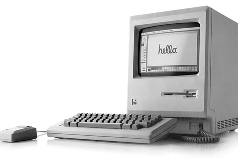
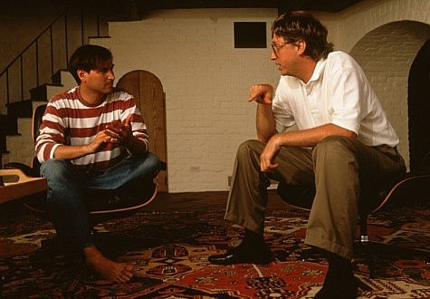

Chương 9

ef Raskin là kiểu người có thể làm mê hoặc cũng như khiến Jobs cảm thấy khó chịu. Đôi lúc, ông biểu hiện cả hai. ông thuộc kiểu người triết lý, vừa ham chơi lại vừa cần cù, chăm chỉ.
Raskin đã từng theo học khoa học máy tính, tham gia dạy nhạc và nghệ thuật thị giác, ông cũng đã từng thành lập một công ty nghệ thuật biểu diễn nhạc thính phòng và thường tổ chức những buổi biểu diễn “du kích”. Luận văn tiến sĩ bảo vệ năm 1967 ở trường u.c. San Diego của ông đã đưa ra luận điểm: những chiếc máy vi tính nên có giao diện hiển thị cả đồ họa thay vì chỉ có ký tự văn bản thông thường. Khi đã thấy chán ngán với công việc giảng dạy, ông thuê một chiếc khinh khí cầu, bay trên nóc nhà hiệu trưởng và hét thật to xuống rằng ông đã quyết định là sẽ từ bỏ.

Chiếc máy tính Macintosh đầu tiên ra đời mang theo nền tảng cho các máy tính hiện nay
Khi Jobs cần tìm một người có khả năng viết một cuốn sách hướng dẫn cho Apple II năm 1976, ông đã gọi cho Raskin, người lúc đó cũng đang sở hữu một công ty tư vấn nhỏ. Raskin tới nhà để xe, cảnh tượng đầu tiên ông bắt gặp là Wozniak đang cặm cụi làm việc ở góc bàn của mình.
Và Jobs đã thuyết phục Raskin viết cuốn sách hướng dẫn đó với giá 50 đô-la. Sau này, ông trở thành quản lý của bộ phận xuất bản của Apple. Một trong những ước mơ của Raskin là chế tạo ra một dòng máy tính giá rẻ phân phối tới mọi tầng lớp người dùng. Vì vậy, năm 1979, ông đã thuyết phục Mike Markkula cho ông chủ trì một dự án phát triển sản phẩm nhỏ mang tên “Annie” để thực hiện ước mơ này. Raskin cho rằng có đôi chút thành kiến phân biệt giới khi đặt tên cho những chiếc máy tính theo tên của một người phụ nữ nên ông đã đổi lại tên của dự án đó theo loại táo yêu thích của mình: McIntosh. Sau đó, để tránh gây hiểu nhầm với một hãng sản xuất thiết bị âm thanh có tên McIntosh Laboratory, ông đã thay đổi các ghép âm thành Macintosh.
Raskin hình dung ra chiếc máy tính đó sẽ được bán với giá 1.000 đô-la và là một cỗ máy đơn giản với màn hình, bàn phím và phần cứng gọi gọn trong một thiết bị. Để giảm giá thành sản phẩm, ông đề xuất rằng chiếc máy sẽ có màn hình 5 inch nhỏ nhắn và một bộ vi xử lý giá rẻ (và lì máy) có tên là Motorola 6809. Raskin thích thú tự coi mình là một triết gia. ông đã viết ra những suy nghĩ của mình trong một cuốn sách được nhiều người biết đến mang tên The Book of Macintosh (Câu chuyện về Macintosh). Ngoài ra, thỉnh thoảng ông cũng đưa ra những “bản tuyên ngôn” về công nghệ. Một trong số đó là “Máy tính của hàng triệu người” và nó bắt đầu với một khát vọng: “Nếu những chiếc máy tính cá nhân thật sự là của cá nhân, thì khi chọn ngẫu nhiên một gia đình, sẽ không thể có trường hợp một hộ chỉ sỡ hữu một chiếc máy.” Trong suốt năm 1979 và đầu năm 1980, dự án Macintosh duy trì sự tồn tại hời hợt. Cứ khoảng vài tháng, nó lại đứng trước nguy cơ bị “xóa sổ”. Mỗi lần như vậy, Raskin lại phỉnh phờ thành công Markkula mở lòng nhân từ. Đội ngũ phát triển Macintosh lúc đó chỉ có bốn kỹ sư, hoạt động tại trụ sở ban đầu của Apple cạnh nhà hàng Good Earth, cách trụ sở mới của công ty vài dãy nhà. Không gian làm việc ở đây được trang trí với rất nhiều đồ chơi và những máy bay mô hình hoạt động bằng sóng radio (một niềm đam mê của Raskin) để mang lại cảm giác như một trung tâm chăm sóc hàng ngày cho những “con mọt công nghệ”. Thỉnh thoảng, công việc sẽ được tạm gác lại để nhường chỗ cho những trận chơi ném bóng. Andy Hertzfeld nhớ lại: “Trò chơi này làm cho mọi người cảm thấy rất hứng thú với những tấm bìa cứng sử dụng để che chắn khi chơi. Văn phòng lúc đó giống như một đống hỗn độn”.
Ngôi sao của đội là một kỹ sư trẻ có mái tóc vàng, mắt to tròn, hiền hậu với khả năng tập trung tâm lý cao độ, tên là Burrell Smith. Ông là một người tôn sùng công việc viết mã lệnh của Wozniak và luôn khao khát, cố gắng hết mình để có thể tạo ra những thành công sáng chói ấy.
Atkinson đã nhận ra tài năng của Smith khi làm trong bộ phận dịch vụ của Apple, ông thật sự kinh ngạc khi chứng kiến khả năng ứng biến với các bản vá lỗi của Smith và đã giới thiệu ông cho Raskin. Smith sau này đã không chống đỡ được chứng bệnh tâm thần phân liệt, nhưng vào đầu thập niên 1980, ông đã thành công khi có thể chuyển sự bất thường trong tâm lý của mình sang niềm hăng say làm việc suốt cả tuần của một tài năng trong ngành công nghệ.
Tầm nhìn của Raskin đã làm Jobs mê mệt nhưng không phải bởi sự sẵn sàng thỏa hiệp để giảm thiểu chi phí của ông. Một ngày mùa thu năm 1979, Jobs nói rằng ông muốn Raskin tập trung vào chế tạo sản phẩm mà ông nhắc đi nhắc lại là “vô cùng tuyệt vời”. Jobs nói: “Đừng quá lo lắng về giá cả, hãy tập trung vào khả năng đáp ứng người sử dụng của máy tính.” Raskin đáp lại lệnh của của Jobs bằng một bản ghi nhớ có đôi chút châm biếm. Nó đưa ra tất cả những thứ mà bạn sẽ muốn ở một chiếc máy tính lý tưởng: màn hình màu có độ phân giải cao, một chiếc máy in không có băng mực với tốc độ in màu một trang một giây, truy cập không giới hạn vào hệ thống mạng ARPA cùng khả năng nhận dạng giọng nói và tổng hợp nhạc, “thậm chí mô phỏng lại giọng hát của Caruso cùng đội hợp xướng thánh ca với âm vang ở mọi cung độ”. Bảng ghi nhớ đó kết luận, “Việc thiết kế dựa trên duy nhất những đặc tính mà bản thân chúng ta mong muốn là điều ngu xuẩn. Chúng ta phải bắt đầu chế tạo dựa trên cả việc định hướng giá cả lẫn tập hợp những chức năng mong muốn, dựa trên xu hướng công nghệ tại thời điểm triển khai và tương lai gần.” Nói cách khác, Raskin hầu như không có đủ sự kiên nhẫn đối với niềm tin của Jobs là bạn có thể thay đổi hiện thực nếu bạn có đủ niềm đam mê để phát triển sản phẩm của mình.
Vì vậy, giữa họ đã xảy ra xung đột, đặc biệt là sau khi Jobs bị tách ra khỏi dự án Lisa vào tháng Chín năm 1980. ông bắt đầu tìm kiếm cách để chứng minh quan điểm của mình và tạo ra sự khác biệt. Chắc chắn rằng, mục tiêu nhắm đến của ông không gì khác ngoài dự án Macintosh.
Những tuyên bố của Raskin về một chiếc máy tính giá rẻ phục vụ số đông với giao diện đồ họa đơn giản, thiết kế rành mạch, tinh tế đã làm ông trăn trở rất nhiều. Và một điều hiển nhiên là, một khi Jobs đã hạ quyết tâm đưa dự án Macintosh thành công, tương lai của Raskin chỉ còn được tính bằng ngày. Joanna Hoffman, một thành viên của nhóm sáng lập ra Mac, nhớ lại: “Steve bắt đầu hành động theo những gì mà ông nghĩ chúng tôi cần phải làm và Jef bắt đầu nghiền ngẫm và nhanh chóng tìm được lời giải cho đầu ra.”
Xung đột đầu tiên của họ liên quan đến sự sùng bái bộ vi xử lý yếu kém Motorola 6809.
Raskin muốn giữ giá của máy Mac dưới 1.000 đô-la trong khi quyết tâm của Jobs là chế tạo ra một dòng máy thật sự tuyệt vời, tuyệt vời đến kinh ngạc. Vì vậy, Jobs bắt đầu tập trung toàn lực chuyển đổi máy Mac sang dùng bộ vi xử lý cấu hình mạnh hơn với tên gọi Motorola 68000. Đây chính là bộ vi xử lý mà dòng Lisa đang sử dụng. Ngay trước Lễ Giáng sinh năm 1980, ông đã yêu cầu Burrel Smith thiết kế một chiếc máy thử nghiệm đầu tiên sử dụng dòng chip mạnh hơn này mà không nói với Raskin. Giống như “người anh hùng” Wozniak đã từng làm, Smith làm việc thâu đêm suốt sáng, liên tục trong ba tuần liền và đã tìm ra những bước nhảy ngoạn mục trong lập trình.
Khi Smith thành công, Jobs đã có cớ gây sức ép chuyển sang sử dụng bộ vi xử lý Motorola 68000 khiến Raskin đã phải cân nhắc và tính toán lại chi phí của Mac.
Có một vài thứ không ổn trong suy tính của Raskin. Bộ vi xử lý giá rẻ mà ông mong muốn không thể hỗ trợ được tất cả các kỹ thuật đồ họa tạo hiệu ứng đẹp mắt như đội của họ đã chứng kiến trong chuyến tham quan Xerox PARC, bao gồm: cửa sổ lệnh hiển thị, bảng chọn, chuột và nhiều thứ khác nữa. Raskin đã từng thuyết phục mọi người đến Xerox PARC, ông thích thú với ý tưởng của màn hình hiển thị theo công nghệ ảnh nhị phân và cửa sổ lệnh, nhưng ông không thích những biểu tượng và hình ảnh nhí nhố. Không chỉ thế, ông cũng ghét cay ghét đắng ý tưởng dùng chuột để nhấp chọn lệnh thay vì dùng bàn phím, ông cằn nhằn: “Một vài người trong dự án say mê với việc có thể làm mọi thứ với một con chuột máy tính. Một ví dụ khác là những ứng dụng ngớ ngẩn về biểu tượng. Biểu tượng là một cái gì đó khó hiểu trong giao tiếp ngôn ngữ của loài người xét trên mọi thứ tiếng. Đó là lý do tại sao con người phải phát minh ra ngôn ngữ hiển thị dưới dạng phiên âm các chữ cái.”
Cựu sinh viên của Raskin là Bill Atkinson thì đứng về phía Jobs. Họ đều mong muốn có một bộ xử lý máy tính có cấu hình mạnh để hỗ trợ những kỹ thuật đồ họa thú vị thiết kế trên nền tảng công nghệ mới nhất và cả việc sử dụng chuột máy tính. Atkinson nói: “Steve phải giành lấy dự án đó khỏi tay Jef. Jef là một người khá cổ hủ và ngoan cố, và Steve phải giành lấy dự án đó ngay lập tức, càng sớm càng tốt. Theo đó, cả thế giới sẽ được hưởng một thành quả tốt hơn.” Sự bất đồng này không chỉ về phương diện quan điểm mà còn trở thành sự xung đột về tính cách. Raskin từng nói: “Tôi nghĩ Jobs thích chỉ đạo mọi người theo cách của mình, ông ấy muốn người ta nhảy thì họ sẽ phải nhảy. Tôi thấy ông ấy là một người thiếu tin cậy và không tử tế gì khi nhờ cậy ai đó để có được điều ông ấy mong muốn, ông ấy sẽ không thích những người mà không coi trọng hay không nhìn ông ấy với vẻ ngưỡng mộ”. Jobs cũng coi thường Raskin không kém.
“Jef là người rất huyeenh hoang, tự đắc. ông ấy không biết nhiều về giao diện người dùng. Vì vậy tôi đã “nẫng” một vài người của ông ấy, những người giỏi như Atkinson, cũng như tự thu nạp thêm một số người khác để cùng chế tạo dòng máy tính Lisa kinh tế hơn chứ không phải là một thứ đồ bỏ đi.”
Một vài người trong nhóm coi việc làm việc cùng Jobs là gần như không thể. Một kỹ sư đã viết trong một bản ghi nhớ gửi tới Raskin vào tháng Mười hai năm 1980 răng: “Jobs dường như chỉ biết tạo ra những căng thẳng, những vấn đề chính trị và cãi cọ, xung đột hơn là dung hòa và giảm thiểu những sự phiền nhiễu đó. Tôi rất thích nói chuyện với ông ấy. Tôi ngưỡng mộ những ý tưởng của ông, cũng như suy nghĩ thực tế và tràn đầy nhiệt huyết. Nhưng tôi không cảm thấy ông ấy có thể tạo ra cho mình một môi trường làm việc tin tưởng, hỗ trợ lẫn nhau và thoải mái mà tôi cần.” Trong khi đó, rất nhiều người lại nhận ra rằng, mặc dù nhược điểm của ông là tính khí thất thường, nhưng Jobs lại có một sự cuốn hút đặc biệt và quyền lực điều hành công ty, điều mà sẽ giúp họ tạo ra sản phẩm gây tiếng vang khắp thế giới. Jobs nói với nhân viên của mình rằng Raskin chỉ là một kẻ mơ mộng trong khi ông ấy là con người của thực thi. Và chính ông sẽ là người hoàn thiện máy Mac trong một năm. Rõ ràng, Jobs muốn chứng minh cho việc đã bị trục xuất khỏi nhóm phát triển Lisa và hăm hở cho cuộc thách đấu. Ông công khai đánh cược với John Couch 5.000
đô-la rằng Mac sẽ được phân phối ra thị trường trước Lisa. ông nói với cả nhóm: “Chúng ta có thể chế tạo ra một chiếc máy vi tính rẻ hơn và tốt hơn Lisa và đặc biệt, sẽ cho ra mắt trước tiên.” Jobs đã khẳng định quyền kiểm soát của mình trong nhóm khi hủy bỏ buổi thảo luận vào giờ ăn trưa mà Raskin trước đó đã dự định sẽ tổ chức cho toàn công ty vào tháng Hai năm 1981.
Lúc đó Raskin tình cờ đi qua căn phòng và phát hiện ra có khoảng 100 người đang đợi ở đó để được nghe bài phát biểu của ông. Jobs trước đó đã không thông báo cho mọi người về lệnh hủy bỏ.
Vì vậy, Raskin không còn sự lựa chọn nào khác là phải thực hiện bài trình bày của mình.
Vụ việc này đã khiến Raskin phải viết một bản tường trình nghiêm khắc gửi cho Mike Scott, người một lần nữa bị đặt ở trong tình huống khó xử của một vị chủ tịch luôn phải cố gắng xoay sở với một người đồng sáng lập tính khí thất thường đồng thời là một cổ đông lớn. Bản tường trình có tựa đề “Làm việc cho/với Jobs”. Trong đó, Raskin viết: Ông ấy là một nhà quản lý đáng sợ... Tôi vẫn luôn ngưỡng mộ Steve nhưng tôi thật khó có thể làm việc với ông ấy. Jobs thường xuyên lỡ các cuộc hẹn. Việc này đã trở nên nổi tiếng đến mức có thể trở thành trò cười cho thiên hạ... ông ấy hành động mà không suy nghĩ và có những nhận xét tòi tệ... ông ấy không đặt niềm tin ở nơi xứng đáng... Rất thường xuyên, khi ai đó trình bày một ý tưởng mới, ông ấy ngay lập tức công kích họ và nói rằng thật mất thời gian để xem xét nó. Chỉ điều đó thôi đã đủ để kết luận về năng lực quản lý yếu kém của Jobs chứ chưa nói thêm việc, khi ai đó trình bày một ý tưởng mà ông đánh giá là tốt thì nhanh chóng, ông sẽ nói với mọi người như thể đó là ý tưởng của chính ông ấy vậy.
Một buổi chiều nọ, Scott gọi cả Jobs lẫn Raskin vào để phân bua trước mặt Markkula. Jobs bắt đầu khóc, ông và Raskin đồng ý với nhau duy nhất một điều: Không ai trong họ có thể làm việc với người còn lại. Trong dự án Lisa, Scott đã đứng về phía Couch. Lần đó, ông đã quyết định rằng, cách tốt nhất giải quyết vấn đề là để Jobs thắng. Sau cùng, dự án Mac được coi là một dự án không mấy quan trọng của Apple với văn phòng đặt tại một tòa nhà cách xa trung tâm, nhằm tách Jobs ra khỏi sự can thiệp vào trụ sở chính. Raskin được đề nghị thôi việc tại công ty. Jobs nhớ lại: “Họ muốn trêu ngươi tôi và cho tôi một công việc để làm. Điều đó cũng tốt thôi. Nó giống như việc tôi phải quay trở lại nhà để xe như trước kia. Tôi có nhóm những ủng hộ mình và tôi vẫn kiểm soát được”.
Sự trục xuất Raskin dường như có vẻ không công bằng lắm, nhưng nó lại tốt cho Macintosh. Raskin muốn có một thiết bị với bộ nhớ nhỏ, hệ điều hành cấu hình thấp, có khe chạy băng cassette, không dùng chuột và đồ họa hạn chế. Không giống Jobs, ông có thể hạ giá bán xuống gần mức 1.000 đô- la, và có thể giúp Apple chiếm lĩnh thị trường. Nhưng ông không thể ngăn cản những gì Jobs làm, công việc có thể chế tạo và phân phối thiết bị có thể cải tổ nền công nghiệp máy tính cá nhân. Trên thực tế, chúng ta có thể nhìn thấy con đường của Raskin dẫn đến đâu. Canon đã tuyển dụng Raskin để chế tạo dòng máy như ông mong muốn. Atkinson nói: “Dòng máy đó ra đời với tên gọi Canon Cat và là một sự thất bại hoàn toàn. Không ai muốn sử dụng nó.
Khi Jobs biến Mac trở thành một phiên bản nhỏ gọn của Lisa, nó đã được xếp vào hệ thống thiết bị vi tính thay vì một thiết bị điện tử tiêu dùng thông thường.”
Texaco Towers
Một vài ngày sau khi Raskin rời đi, Jobs xuất hiện trước bàn làm việc của Andy Hertzfeld, một kỹ sư trẻ của nhóm Apple II, người có khuôn mặt to tròn cùng cử chỉ tinh quái, giống với người bạn thân Burell Smith. Hertzfeld nhớ rằng hầu hết đồng nghiệp của ông lúc đó đều e ngại Jobs, “bởi những cơn thịnh nộ tự phát và xu hướng nói thẳng với mọi người những gì ông nghĩ, tất nhiên là hầu như đó là những điều khó nghe”. Nhưng Hertzfeld cảm thấy thích thú với Jobs. Vừa bước vào, Jobs đã cất tiếng hỏi: “Anh có giỏi không? Chúng tôi chỉ cần những người thật sự tài giỏi để cùng thiết kế ra Mac, và tôi không chắc là anh có đủ tài năng để làm việc đó.” Nhưng Hertzfeld biết làm sao để đáp lời Jobs. “Tôi đã trả lời ông ấy là có và tôi nghĩ là mình cũng khá giỏi giang đấy.”
Jobs rời đi và Hertzfeld quay trở lại làm việc. Sau đó vào buổi chiều, ông nhìn thấy Jobs đang nhìn chằm chằm từ bức chắn ở khoang làm việc của mình và nói “Tôi có một tin tốt cho anh.
Anh sẽ làm việc với nhóm phát triển Mac của chúng tôi bây giờ. Đi với tôi.” Hertzfeld đáp lại rằng ông cần một vài ngày để hoàn thiện công việc còn dang dở ở Apple II. Jobs nói gần như yêu cầu: “Còn điều gì quan trọng với anh hơn là phát triển Macintosh chứ?”.
Hertzfeld giải thích rằng ông ấy cần phải hoàn thiện chương trình DOS của Apple II một cách hòm hòm thì mới có thể bàn giao nó lại cho người khác. Jobs ngắt lời ngay: “Anh chỉ đang lãng phí thời gian của mình mà thôi. Ai sẽ quan tâm đến Apple II nữa chứ? Dòng máy Apple II sẽ trở nên lỗi thời trong một vài năm nữa. Máy tính Macintosh mới là tương lai của Apple và anh sẽ bắt đầu phát triển nó cùng chúng tôi ngay bây giờ!”. Với chừng đó, Jobs rút mạnh sợi dây nguồn nối tới máy tính Apple II của Hertzfeld khiến cho tất cả những dòng mã chương trình (code) của Hertzfeld biến mất. Jobs nói: “Đi nhanh với tôi nào. Tôi sẽ đưa anh đến bàn làm việc mới của anh”. Jobs lái chiếc xe Mercedes màu bạc của mình đưa Hertzfeld đến trụ sở làm việc của nhóm phát triển Macintosh.
Vừa thả mình vào không gian cạnh Burrel Smith, ông chỉ vào chiếc bàn và nói: “Bàn làm việc mới của cậu đây. Chào mừng cậu gia nhập nhóm phát triển Mac.” Chiếc bàn đó là bàn làm việc cũ của Raskin. Raskin đã bỏ đi quá vội vàng nên những đồ đạc linh tinh của ông vẫn còn ở trong ngăn kéo, bao gồm cả những chiếc máy bay mô hình.
Bài kiểm tra đầu tiên khi tuyển dụng nhân sự vào “ban nhạc vui vẻ của những tên cướp biển” của Jobs vào mùa xuân năm 1981 là việc kiểm tra xem họ có niềm đam mê đối với sản phẩm này không. Đôi lúc, ông dẫn ứng cử viên vào căn phòng, nơi để trưng bày chiếc máy tính thử nghiệm đầu tiên của Mac được che vải kín, sau đó đột nhiên vén tấm màn phủ lên để “vị khách” chiêm ngưỡng. Andrea Cunningham kể lại: “Nếu mắt của ứng cử viên đó sáng lên, hay nếu họ đi thẳng đến chỗ con chuột và bắt đầu thử dùng nó để trỏ và nhấp chọn, Steve sẽ cười tươi và tuyển dụng họ. Tất cả những gì ông muốn ở họ là thốt lên trầm trồ, thẤn phục-Wow!”.
Bruce Horn là một trong những lập trình viên ở Xerox PARC. Khi một số người bạn của ông như Larry Tesler đã quyết định gia nhập nhóm nghiên cứu Macintosh, Horn cũng cân nhắc việc chuyển đến đây làm. Tuy nhiên, ông có một lời mời chào làm việc hấp dẫn và một khoản tiền thưởng ký kết trị giá 15.000 đô-la khi đồng ý vào làm ở một công ty khác. Jobs đã nhấc máy gọi ngay cho ông ấy vào một buổi tối thứ Sáu nọ. Jobs nói: “Cậu phải đến ngay Apple vào sáng ngày mai. Tôi có rất nhiều thứ muốn khoe với cậu”. Horn đã đồng ý đến và Jobs đã “câu” được ông ấy.
Horn nói “Steve vô cùng phấn khích với việc chế tạo ra một thiết bị đáng kinh ngạc mà có thể khiến thay đổi cả thế giới. Chính tính cách mạnh mẽ, kiên quyết của Jobs đã khiến tôi thay đổi ý kiến.” Jobs đã chỉ cho Horn chính xác cách thức những chiếc vỏ máy bằng plastic được thiết kế như thế nào và cách nó khớp từng góc cạnh với từng bộ phận trên máy như bàn phím. “Ông ấy muốn tôi nhìn một cách tổng thể mọi thứ đang và sẽ diễn ra, từ đầu đến cuối. “Wow!” là tất cả những gì tôi có thể nói lúc ấy. Không phải lúc nào tôi cũng được chứng kiến một con người với một niềm đam mê cháy bỏng đến vậy. Vì vậy, tôi quyết định sẽ làm việc với nhóm nghiên cứu Macintosh.”
Jobs thậm chí đã cố gắng hòa hợp với Wozniak. Sau này Jobs đã nói với tôi rằng, “Tôi không bằng lòng với việc ông ấy đã không làm gì nhiều cho Apple, nhưng sau đó tôi nghĩ, thề có Chúa là tôi sẽ không thể có mặt ở đây mà không có tài năng của ông ấy.” Nhưng ngay khi Jobs bắt đầu khiến cho Woz hứng thú với Mac thì ông ấy lại bị tai nạn máy bay khi chiếc Beechcraft một động cơ của ông đang cố gắng cất cánh gần Santa Cruz. Woz đã may mắn sống sót và bị mất trí nhớ một phần. Jobs đã dành thời gian ở viện cùng với Wozniak, nhưng khi Woz tỉnh lại, ông lại quyết định: đó là lúc ông sẽ rời xa Apple. Mười năm sau khi bỏ dở giữa chừng, ông quyết định quay trở lại đại học Berkely dưới tên đăng ký là Rocky Raccoon Clark để lấy nốt tấm bằng.
Để khiến cho dự án này mang màu sắc của mình, Jobs quyết định sẽ không đặt tên mã theo loại táo của Raskin nữa. Trong rất nhiều cuộc phỏng vấn, Jobs đã hướng việc định nghĩa những chiếc máy tính này như “những chiếc xe của suy nghĩ‟: việc phát minh ra chiếc xe đạp đã cho phép con người di chuyển hiệu quả hơn cả một con kền kền, cũng như việc tạo ra những chiếc máy tính giúp loài người gia tăng tần số làm việc hiệu quả của trí não. Vì vậy, một hôm Jobs đã ra lệnh: từ giờ trở đi, những chiếc máy Macintosh sẽ được biết đến như những “chiếc xe đạp”. Tuy nhiên, việc này không mấy dễ dàng. Hertzfeld nói: “Burrell và tôi nghĩ đó là điều nực cười nhất mà chúng tôi từng được nghe, và chúng tôi từ chối sử dụng cái tên mới này.” Trong vòng một tháng, ý tưởng này đã bị loại bỏ.
Tính đến đầu năm 1981, nhóm phát triển Mac đã có tới 20 thành viên, và Jobs quyết định rằng họ nên chuyển đến một nơi làm việc lớn hơn. Vì vậy, ông đã đưa mọi người tới làm việc tại tầng hai của một tòa nhà hai tầng, lợp ngói màu nâu, cách trụ sở chính của Apple khoảng ba dãy nhà. Tòa nhà đó nằm cạnh ga tàu Texaco nên được biết đến với cái tên Texaco Towers. Để khiến cho văn phòng làm việc trở nên sống động hơn, ông nói với cả nhóm rằng sẽ mua một hệ thống dàn âm thanh. Hertzfeld kể: “Tôi và Burrell chạy ra ngoài và ngay lập tức mua một chiếc đài cassette dạng thùng hai loa trước khi ông ấy có thể thay đổi ý kiến.” Chiến thắng của Jobs đã sớm được biết đến. Một vài tuần sau khi giành quyền quản lý bộ phận Mac từ tay Raskin, ông đã giúp Mike Scott trở thành chủ tịch của Apple. Scotty ngày càng xuống dốc và thất thường, lúc đe dọa lúc ngon ngọt với mọi người. Cuối cùng, ông đã mất hầu hết sự ủng hộ trong nhân viên khi làm cho họ bất ngờ vì những sự sa thải hàng loạt không thương xót.
Thêm vào đó, ông lại phải gánh chịu rất nhiều nỗi đau đớn khác, từ việc bị nhiễm trùng mắt cho đến chứng rối loạn thời gian ngủ. Trong khi Scott nghỉ dưỡng ở Hawaii, Markukla đã triệu tập cuộc họp các nhà quản lý cấp cao hỏi về việc có tán thành thay thế ông không. Hầu hết họ, bao gồm cả Jobs và John Couch đã đồng ý. Vì vậy, Markkula đã giữ chức chủ tịch lâm thời và có đôi chút bị động. Jobs nhận thấy rằng bây giờ ông đã có thể toàn quyền làm những gì mình muốn để phát triển Mac.

Steve Jobs và Bill Gates năm 1982